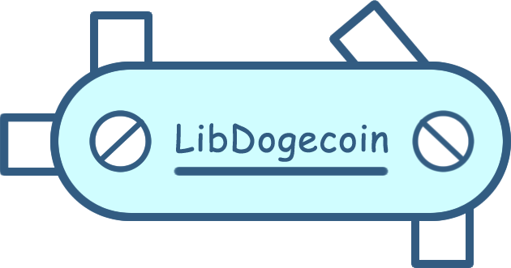

Libdogecoin, a clean C library of Dogecoin building blocks



Table of Contents
What is Libdogecoin?
Libdogecoin will be a complete implementation of the Dogecoin Protocols, as a C library (and series of bindings to popular languages) which will allow anyone to build a Dogecoin compliant product, without needing to worry about the deeper, complicated specifics of the crypto functions.
Libdogecoin is here to make crypto development simple, clean, and fun!
This will be a pure library, providing a set of callable functions to implement in external projects, but not a ‘runnable’ node facility. Although we expect building a Dogecoin Node will be a useful test and early outcome, that will live in another repository.
It is intended that connecting the bits together into an engine be done at the level above, via the networking libraries of the host language.
See the Project Roadmap for more on the planned stages of development
See the Dogecoin Trailmap for more on libdogecoin
Advantages of Libdogecoin
- No dependencies in case no p2p network client is required (only dependencies are libsecp256k1 added as git subtree and optionally (enabled by default) libunistring for mnemonics)
- The only dependency for the p2p network client is libevent (very portable)
- optimized for MCU and low mem environments
- ~full test coverage
- Best effort to to be mem leak free (manual valgrind check per supported platform)
Current features
- Generating and storing private and public keys
- ECDSA secp256k1 signing and verification (through libsecp256k1 included as git subtree)
- Generate recoverable signatures (and recover pubkey from signatures)
- BIP32 hierarchical deterministic key derivation
- Transaction generation, manipulation, signing and ser-/deserialization including P2PKH, P2SH, multisig
- Address generation
- Base58check encoding
- Native implementation of SHA256, SHA512, SHA512_HMAC, RIPEMD-160 including NIST testvectors
- Native constant time AES (+256CBC) cipher implementation including NIST testvectors
- Event based dogecoin P2P client capable of connecting to multiple nodes in a single thread (requires libevent)
Why C?
The Dogecoin Core project is written in C++, why move to C? This is a good question.
The Dogecoin Core project was inherited when Dogecoin was originally forked and makes use of some reasonable heavy C++ libraries that add complexity to the build process, as well as cognitive complexity for new developers.
The desire is to provide a simple to learn library with few external dependencies that can be built with relatively little setup by new developers. Furthermore the aim of providing wrappers for a number of higher-level languages leans strongly toward either C or RUST from a binding/support perspective, and we believe C still has significantly more support when writing bindings for a wide variety of other languages. C is better supported on embedded/lightweight platforms, with the goal of moving dogecoin beyond the realm of the PC; and actually prepares (constrains it) to be re-coded/adapted in other languages as specific OO and memory mgmt functions of C++ aren't required. Wrappers that previously lived here in this repository have been moved to their own respective projects (python and go bindings) found at @dogeorg.
Dogecoin Standard/Spec
During the process of extracting the fundamentals from the Dogecoin Core Wallet (reference implementation) we aim to document ‘how Dogecoin works’ as a suite of tests and documents we are calling the Dogecoin Standard.
See /spec
By doing this we will be able to verify that the Libdogecoin implementation of Dogecoin’s internals is accurate to the OG wallet, and thus provide a mechanism for any future Dogecoin implementations to verify compliance with the Dogecoin Network.
Code of Shibes
By contributing to this repository you agree to be a basic human being, please see CONDUCT.md
Contributing
TL;DR: Initially during the early phase of development we'll keep this basic, after the library starts to become a dependency for projects in real-world active use this will likely change and the API will become considerably more extensive.
- Express interest and get added to the libdogecoin team on GitHub and join the conversation in the Foundation discord server.
- Branch/PRs in this repository (see above point for access)
- Ensure tests pass and coverage is maintained
- Update libdogecoin.h in [
/include/] and example.c in [/contrib/examples/] - 1 approval from another contributor required to merge to main
- Don't introduce dependencies without discussion (MIT); our aim is to have as few dependencies as possible, with the ideal (possibly unachievable) goal of having none beyond standard c libs and a compiler.
- Collaborate before you innovate! (this means, discuss what you're working on where everyone can see, before submitting a change.)
- Have fun <3
Repository Navigation
Advice on how to navigate this repository:
- [
/.libs/] where the static library lives after it has been fully built. - [
/contrib/<proj>] a place for misc non-core experiments, utils, demo-nodes etc. - [
/spec/*.md] a place to begin documenting the Dogecoin Standard as we go. - [
/include/dogecoin/*.h] provides header files for libdogecoin users, look here for .h. - [
/src/<feature>/*.c,*.h] look here for local .c/.h source implementing the contracts in/include. - [
/test/] test suite. - [
/] Makefile, license, basic readmes and build control files
The documentation has many helpful resources regarding setup and usage of Libdogecoin, along with some educational content on the specifics of Dogecoin protocols. Their contents are listed below:
address.mdFull description of dogecoin addresses and the Libdogecoin Essential Address API.getting_started.mdDetailed instructions for building, installing, and implementing the library in your project.project_roadmap.mdOur plan for the future of Libdogecoin (with pictures!).tools.mdGuidance on how to use provided helper scripts and tools likesuchandsendtx.transaction.mdFull description of dogecoin transactions and the Libdogecoin Essential Transaction API.
Quick Start
For more detailed build and installation instructions, please refer to getting_started.md
Preliminary
Before attempting to build, make sure all the necessary dependencies for your architecture are installed.
Debian/Ubuntu
sudo apt-get install autoconf automake libtool build-essential libevent-dev libunistring-dev
MacOS
xcode_select --install
sudo chown -R $(whoami) $(brew --prefix)/*
Other - Please submit a pull request to add dependencies for your system, or update these.
Building
Debian / Ubuntu
To build the full library, including the such and sendtx CLI tools, run the following autoconf commands:
./autogen.sh
./configure
make
To build the pure library without net support, add the following flags to the ./configure command:
./autogen.sh
./configure --disable-net --disable-tools
make
CMake
To build with cmake run the following from the project root directory:
mkdir build
cd build
cmake ..
cmake --build .
Integration
Using Libdogecoin in your own project is very simple! Once the library is built, you will see the resulting libdogecoin.a file in the /.libs folder. Additionally, you will want to locate the libdogecoin.h header file in the /include/dogecoin folder. Move both of these files into your project directory, or somewhere where the compiler can find them. In your source code which uses the Libdogecoin API, make sure to include this libdogecoin.h header at the top of your code.
The following instructions show how to build and integrate libdogecoin under Linux, This will vary somewhat for other operating systems; but the process itself should be roughly analogous.
In addition to the following instructions we've created an example file that contains functions stopping at the latest version which is found in /contrib/examples/example.c.
To compile that example with gcc, first build libdogecoin so the resulting .a file will be found in /.libs and execute:
gcc ./contrib/examples/example.c ./.libs/libdogecoin.a -I./include/dogecoin -L./.libs -ldogecoin -lunistring -o example
then run the example: ./example. Otherwise continue with something like the folowing:
main.c:
#include <stdio.h>
#include "libdogecoin.h"
int main() {
// your code here...
}
Once you are ready to compile, the libdogecoin.a file must be linked to your source code, along with libevent and libunistring. The resulting compilation command will looks similar to this:
gcc main.c -ldogecoin -levent -lunistring -o myprojectname